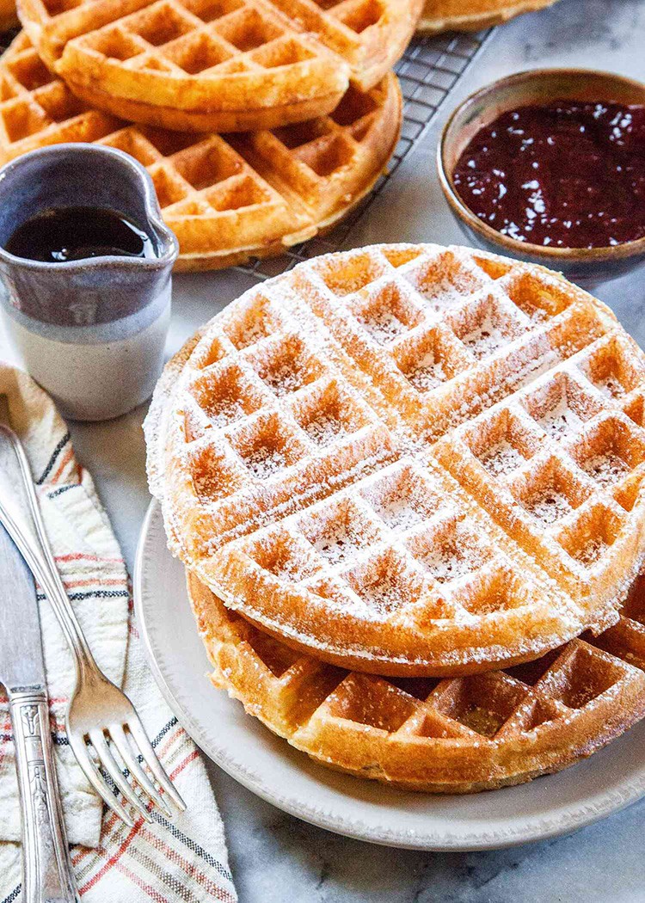

Main
Amerikaner |
Roast with Mustard Sauce |
Red Cabbage a la Oma |
Spaghetti Carbonara

This is my favorite waffle recipe. The waffles come out moist and buttery and taste delicious with powdered sugar or otherwise delicious toppings.
Serve coated with powdered sugar or maple syrup.
Enjoy!